blog.jamesbaber.co.uk
Repair of QTX DP4 Dimmer Pack.
£80 Four two-channel leading edge dimmer pack with DMX input and internal chase presets.
Acquisition
The item was found listed on eBay as follows:
Channels 2 and 3 not working, even though the fuses have been replaced with new fuses which are known to be working.
Otherwise, everything else works and in good condition.
Power cable not supplied.
Sounds like a nice easy job. Two failed channels hints to a single common issue (see Amazon reviews below). Two working channels to test and compare against. For £32, why not? While it's still available for £80.32 on Amazon Prime, the one-star reviews using phrases like "junk", "dead", "KEEP AWAY" and "AVOID" were somewhat concerning. As usual, the manual is available online.
This product is also available under the Showtec and Transcension brands as the Multidim 4 and DDP-405 respectively. These products are only minorly different.
Teardown
After removing the poor quality Phillips head M3 screws and therefore the device cover, the first thing to notice is the flux residue. Both sides of the PCB were covered in a delightful layer that was somehow both sticky and crunchy.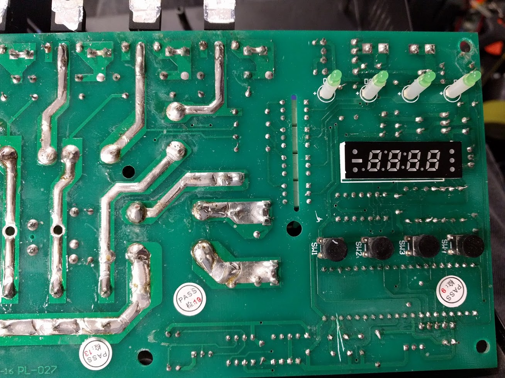
The manufacturer didn't seem to trust the IEC C13 sockets to hold themselves in place, so added hot glue around them. The very same hot glue that was falling out in pieces when the device was opened for the first time (along with the glass display cover). I'm not sure I trust the ridgid soldered brass earth bar between the sockets. I would have preferred a more flexible, mechanically forgiving crimped wire daisy-chained connection (similar to the neutral).
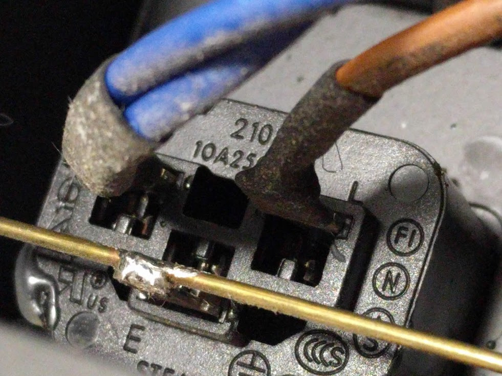
There is only a single PCB; it contains the entire control system, including a microcontroller, DMX transceiver, triacs and their isolated drivers. The triacs are mounted using M3 screws to a thin bracket which is welded to the front of the case. The triac datasheet states a dynamic resistance, RD of 0.025 Ω which, at the product's maximum allowed load of 10 A for a single channel, means 102 * 0.025 = 2.5 W dissipated. Or 0.625 W per triac if all four channels are operational.
The primitive heatsink is more than capable of dissipating this, although it would be interesting to inspect with a thermal camera from the outside.

The manufacturer recommends F2.5A (fast-acting) output fuses but allows up to 10 A per channel if the total load doesn't exceed 10 A. The previous owner of this unit replaced three fuses with glass T6.3A (slow-acting) types and the last one with a ceramic cased 2 A fuse marked BS546. Cutting edge indeed. While there is no guarantee that a fuse will blow fast enough to protect silicon devices such as triacs, they will still improve the chances of survival greatly. All four were replaced with the fast-acting 5 A variety before any testing under load took place.
When the manufacturer states that the device should be disconnected from the mains before connecting fixtures, they aren't kidding. The product is described as having a "pulse feature to keep lamp filaments warm for instant on/off" but the manual doesn't go into any more detail. Incandescent filament lamps, similar to capacitive loads, draw a high inrush current of over ten times the steady-state current when initially powering on. This is because a cold filament (off) has a low resistance, and therefore draws a large current. This current heats the filament, in turn reducing the current draw until steady-state conditions are reached. To somewhat overcome this, conventional fixtures used in theatres and concerts are often "pre-heated" to decrease ramp time and increase lamp life by reducing thermal shock. In the case of this dimmer, a 15 W filament lamp can be seen glowing and drawing 15.7 mA while the channel is switched off. Throwing the single pole "power" rocker switch only disconnects the control circuitry and not the triacs so the outputs remain live when the device otherwise appears dead.
The moral? Disconnect from the mains before connecting fixtures!
Reverse Engineering
When the device is put into chase mode, all the channel indicator LEDs light, showing that the microcontroller (AT89C52) is still alive (phew). Triacs need a load to latch and operate correctly. Around 60 mA (14 W) in this case. Without this, simply measuring the output voltage of each channel tells us nothing. With the device powered off and the load disconnected, the triacs were tested in circuit. For the two working channels, the resistance between MT1 & MT2 (triac anode 1 & anode 2) was around 50 MΩ, decreasing at a decreasing rate and tending towards 40 MΩ. When the triac gate was connected to MT2 the resistance between MT1 & MT2 decreased to around 76 Ω. This is only true for channels 1 & 4 as channel 2 & 3 (faulty) behave differently. This narrows down the fault to the triac driving circuitry, therefore ruling out the control circuitry and digital control signal.A rough schematic of the dimming circuitry was created, including the optoisolators (which double as triac drivers, how fancy).
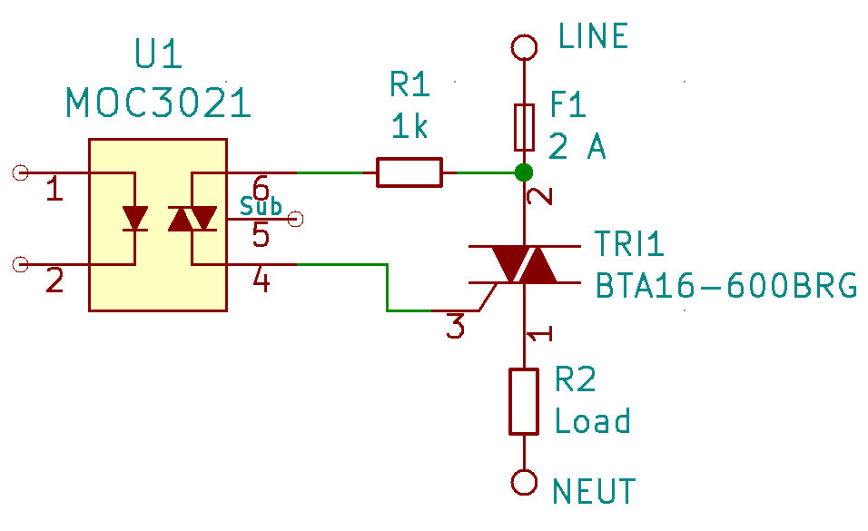
With the device still powered off, the optoisolator diode inputs (pin 1 & 2) were tested using a multimeter in diode check mode. All four ICs tested for about Vf = 1 V which matches the datasheet. With the device powered on, the voltage on the optoisolator output (pins 4 & 6) was measured. The result depended on the state of the channel and was about 0.03 V - 0.05 V for the channels which were said to be working. The two channels which were suspected to be faulty measured between 2.7 V and 20 V. Bingo.
Always handy when the pinouts are printed on the packages. ;)
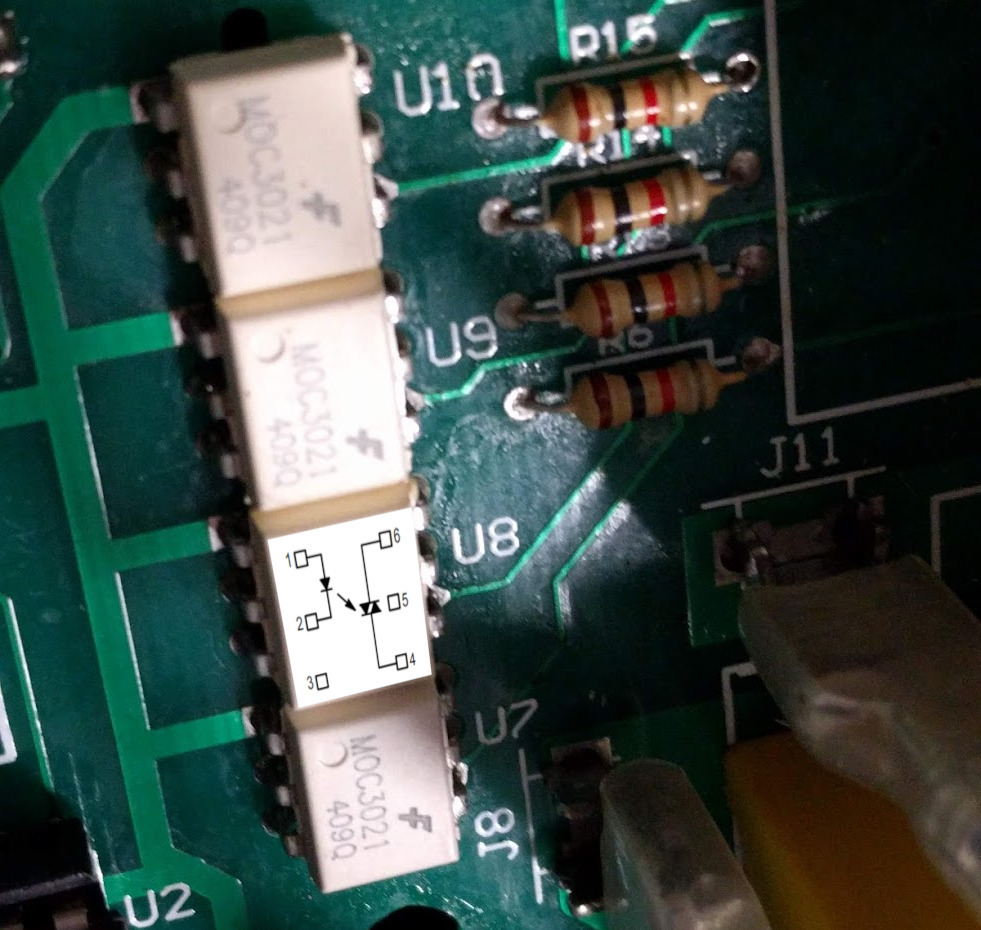
It was at this point that the sporadic nature of the gate traces running under the inductors, power resistors (100 Ω) and safety caps became apparent. To confirm the triac drivers were in the same order as the triacs, continuity measurements were performed to help follow the gate traces.
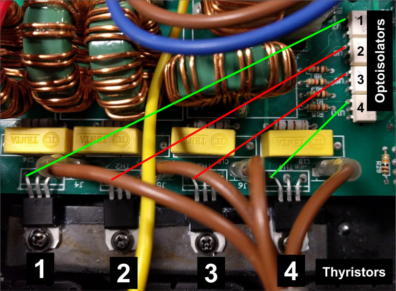
The good news is that the outer two channels (1 & 4 - green) are in the expected order. The better news is that the inner channels (2 & 3 - red) aren't connected! At this point, it's entirely possible that the only issues may be two broken traces. Going back to an earlier photo and zooming in - Bingo #2. I'd guess the sooty spot underneath the capacitor is related to the issue.
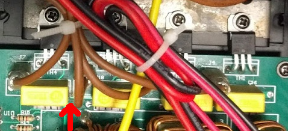
Let's get the Tenta 0.22 μF 275 V self-healing Class X2 capacitor desoldered and set up the microscope. (I checked the capacitors too - they're good.)
Repair
The two traces are the gate connections (optoisolator pin 4 -> triac pin 3). If we assume a trace width of 0.3 mm and copper thickness of 1 oz/ft2 then the maximum safe current for this trace is around one ampere. We can tell that an overload was not the cause of this issue as the burnt marks are between two traces. The PCB designer routed these traces too close together and didn't account for contamination from foreign materials or abrasion from the above capacitor. To be honest, I have no fluxing idea what could have caused this. Presumably, one channel was on, and another was off. Creating a 230 V potential between the gate pins. If you thought flux residues would be non-conductive, you'd be mostly correct. While some flux formulas are designed to be specifically "no clean" and leave less corrosive and conductive residues, all liquid flux residues will attract and retain dust. So regardless of which flux was used here, its existence isn't helping matters.You don't need to look very close to see the bead of melted and resolidified copper in the following two photos.
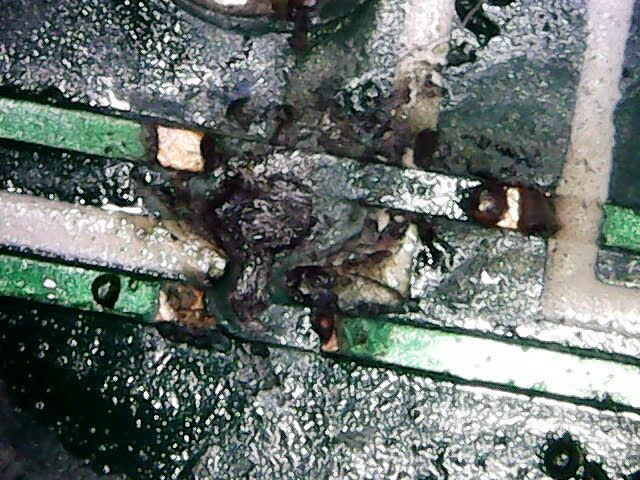
Using 99% isopropyl alcohol, cotton buds and a fibreglass pen, the area was cleaned to allow inspection of the surface below. Luckily the carbonisation of the PCB is only on the surface, so simply routing around the burnt patch should be sufficient.
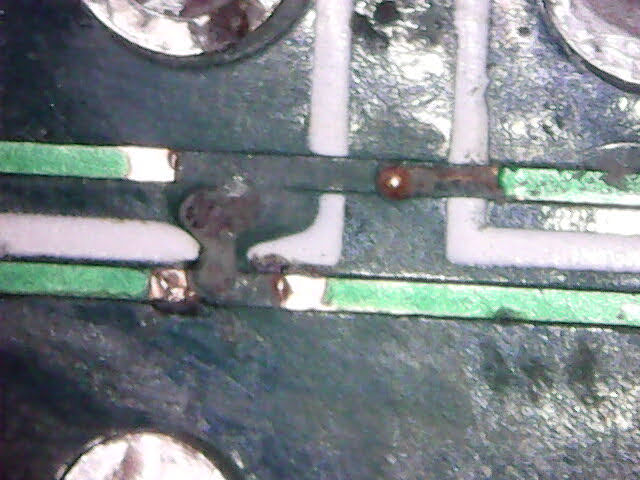
The effect of this fault is illustrated in the updated schematic below.
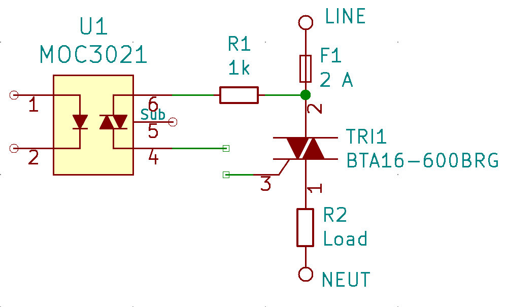
The traces were cut back using a scalpel to give clearance around the burnt area and cleaning was performed again.
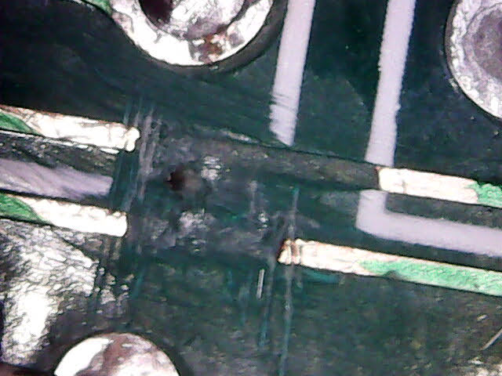
Using some MG Chemicals No Clean flux and 0.2 mm diameter enamelled copper wire, the two broken traces were repaired.
More cleaning
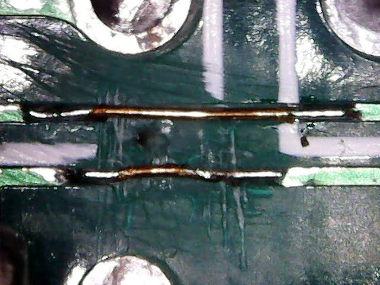
A small amount of fast-drying epoxy resin was added to the area to keep the replacement traces in place, increase creepage distance and prevent mechanical interference from the corner of the yellow capacitor mounted above.
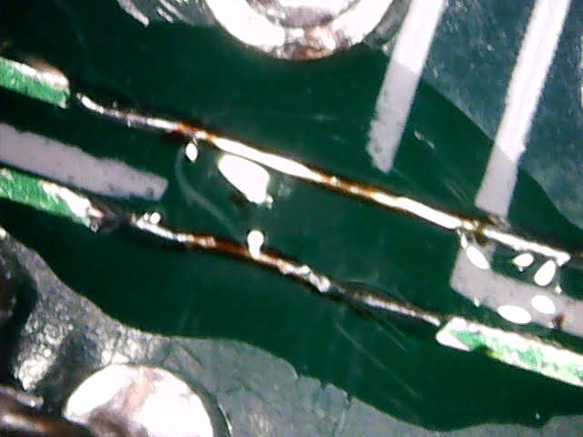
The class X2 capacitor was soldered back in place, leaving a small space above the repaired trace. It looks better without using the microscope.
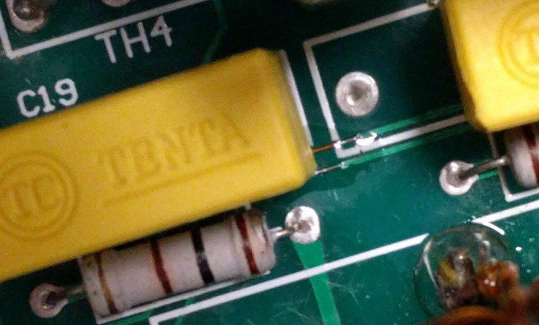
Using the usual method of alcohol, Safetiss lint free tissues and an old toothbrush, all the old flux was removed from the mains section of the PCB. I refrained from cleaning the front side of the control circuitry as I didn't want to risk breaking anything else before the device could be fully tested. 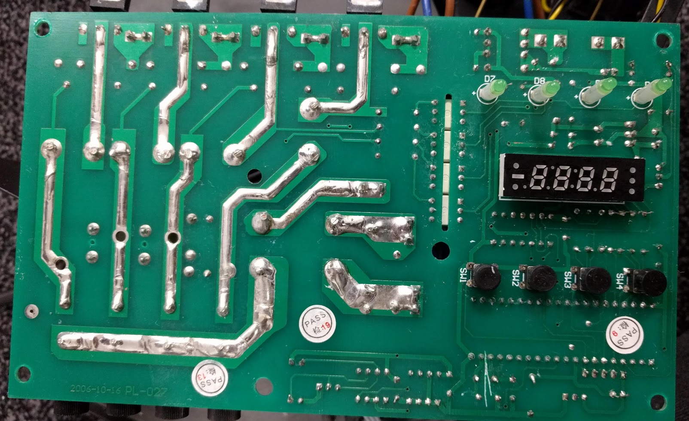
Testing and Conclusion
All four channels are proven to work via an external DMX controller.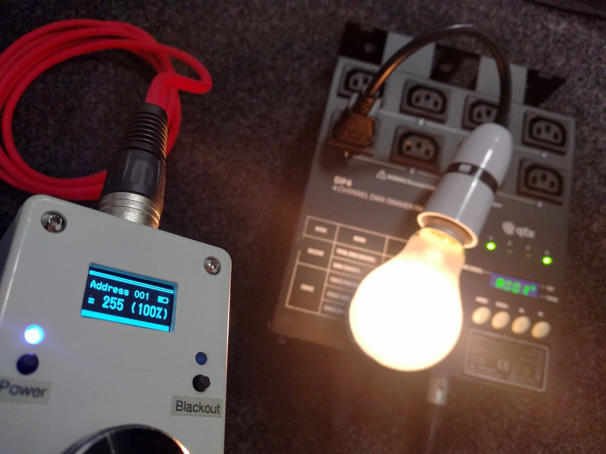
How would you go about diagnosing this issue without two good channels to compare measurements to?
While this was a fun project and an easy repair, I'm not sure I'd recommend these products for professional use. I can't be certain that the failed units described in the Amazon reviews are due to the same issue, but it seems entirely possible.
It's also possible that the flux residue in my unit is the fault of a 3rd party, but it's more likely to be due to lack of QC by the manufacturer. Despite all the stickers.